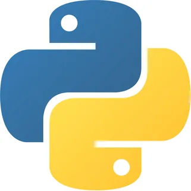
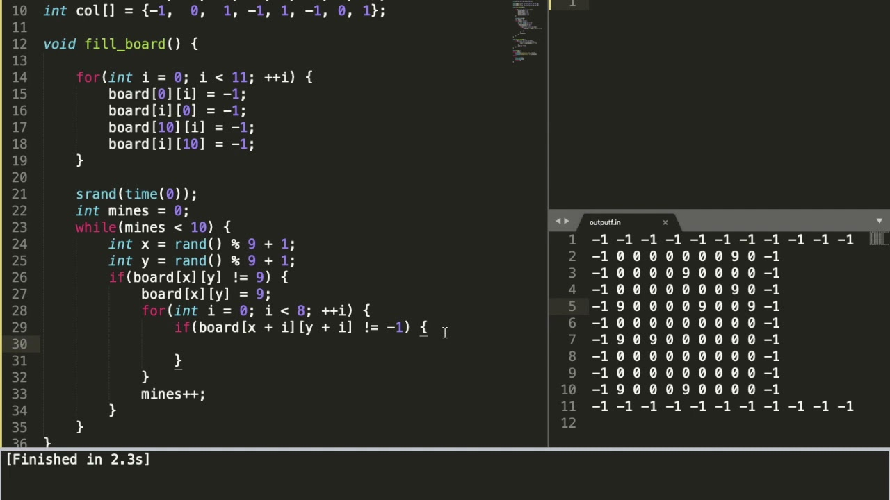

История создания
Язык программирования C++ был создан в 1979 году датским учёным Бьёрном Страуструпом в лабораториях компании Bell Labs. Изначально язык назывался «C с классами» (C with Classes) и представлял собой расширение языка C возможностями объектно-ориентированного программирования.
В язык был переименован в C++ (оператор инкремента в C символизирует развитие языка). Первая коммерческая реализация появилась в вместе с публикацией книги «The C++ Programming Language».
Стандартизация языка началась в 1989 году. Первый официальный стандарт ISO/IEC 14882:1998 был принят в 1998 году. С тех пор вышли стандарты C++03, C++11, C++14, C++17, C++20 и C++23, каждый из которых значительно расширял возможности языка.
Краткий обзор языка

C++ — это компилируемый статически типизированный язык программирования общего назначения, поддерживающий несколько парадигм: процедурную, объектно-ориентированную и обобщённую (шаблоны). Язык широко используется в системном программировании, разработке игр и высокопроизводительных приложений.
| Характеристика | Описание в C++ |
|---|---|
| Типизация | Статическая, строгая |
| Парадигмы | Процедурная, ООП, обобщённое программирование, функциональная |
| Управление памятью | Ручное (new/delete) и автоматическое (RAII, умные указатели) |
| Компиляция | AOT (ahead-of-time), в машинный код |
Как начать работу (инструкция):
- Установите компилятор: GCC (Linux/macOS) или MSVC (Windows).
- Установите среду разработки: Visual Studio, CLion или VS Code.
- Напишите первую программу в файле
main.cppи скомпилируйте командойg++ main.cpp -o main.
Ключевые особенности:
- Высокая производительность и контроль над ресурсами.
- Поддержка низкоуровневого программирования (указатели, работа с памятью).
- Богатая стандартная библиотека (STL): контейнеры, алгоритмы, итераторы.
Области применения:
- Разработка игр и игровых движков (Unreal Engine)
- Системное программирование (ОС, драйверы, браузеры)
- Финансовые системы и высоконагруженные серверы
Примеры кода

Ниже приведён пример простого объектно-ориентированного кода на C++ с ручной подсветкой синтаксиса (в стиле темы Monokai):
#include <iostream>
#include <string>
class Greeter {
private:
std::string name;
public:
Greeter(std::string n) : name(n) {}
void greet() const {
// Вывод приветствия в консоль
std::cout << "Привет, " << name
<< "! Добро пожаловать в C++."
<< std::endl;
}
};
// Точка входа в программу
int main() {
Greeter myGreeter("Разработчик");
myGreeter.greet();
return 0;
}